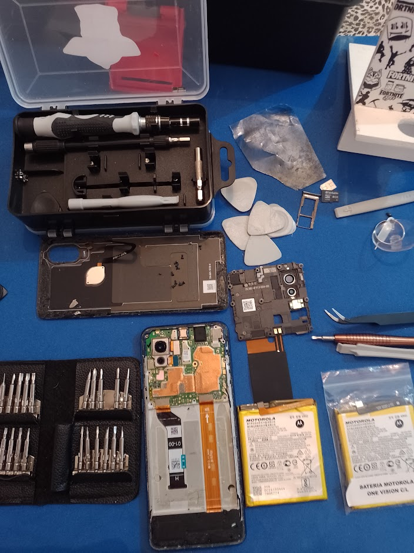

Mi nombre es Franco Paredes, tecnico en reparación y programación de celulares y dispositivos moviles.
Tech Pro comenzó como un proyecto con muchas ganas de crecer y con la necesidad de aprender algo
que
me apaciona: la tecnología.
Comenzamos estudiando las bases de nuestro objetivo, identificacion de los componentes de los aparatos
electronicos.
Gracias al estudio con el profesor Ruben
Pacheco de Zona Cell en Salta, fuimos adquiriendo el conocimiento necesario para dar nuestros
primero pasos.
Poco a poco fuimos comprando nuestras primeras herramientas y consiguiendo la confianza para realizar nuestros primero trabajos.
Entre el boca en boca, avisos en redes, estudiando un poco como se realiza una medición del publico, fuimos
creciendo.
De pocos clientes, pasamos a 10 por semana, luego 20 y seguimos creciendo.
Compramos equipamiento para dar un servicio mas amplio, pudimnos traer productos para venta. Y aun
seguiremos
creciendo gracias a esa confianza que logramos darle a nuestros cliente todos los dias.
Mi nombre es Franco Paredes, tecnico en reparación y programación de celulares y dispositivos moviles.
Tech Pro comenzó como un proyecto con muchas ganas de crecer y con la necesidad de aprender
algo
que
me apaciona: la tecnología.
Comenzamos estudiando las bases de nuestro objetivo, identificacion de los componentes de los aparatos
electronicos.
Gracias al estudio con el profesor Ruben
Pacheco de Zona Cell en Salta, fuimos adquiriendo el conocimiento necesario para dar nuestros
primero pasos.
Poco a poco fuimos comprando nuestras primeras herramientas y consiguiendo la confianza para realizar nuestros primero trabajos.
Entre el boca en boca, avisos en redes, estudiando un poco como se realiza una medición del publico,
fuimos
creciendo.
De pocos clientes, pasamos a 10 por semana, luego 20 y seguimos creciendo.
Compramos equipamiento para dar un servicio mas amplio, pudimnos traer productos para venta. Y aun
seguiremos
creciendo gracias a esa confianza que logramos darle a nuestros cliente todos los dias.